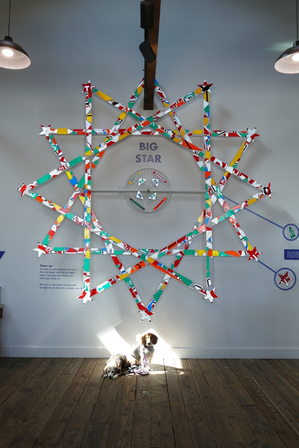

<--Previous Up Next-->

Vollis Simpson often used road signs as raw material. This piece encourages you to take a photo with flash to see the reflectivity.
Halley Beagle North Carolina Wallace Beagle Wilson